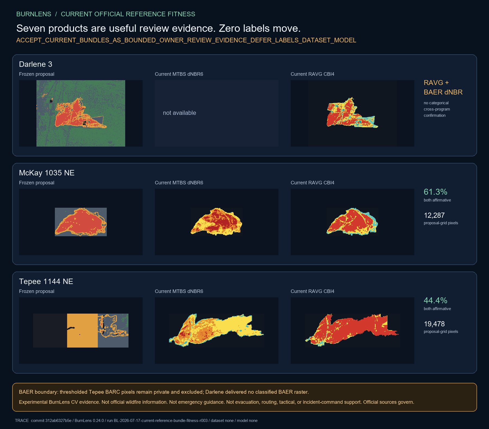

BURNLENS / PHASE TWO / ISSUE #416
Current bundles strengthen owner review, not labels.
Experimental BurnLens CV evidence. Not official wildfire information. Not emergency guidance. Not evacuation, routing, tactical, or incident-command support. Official sources govern.

Seven delivered products passed exact-byte, archive, metadata, raster, CRS, nodata, and class-domain inspection. Zero labels move: this checkpoint records zero owner decisions and changes zero proposal pixels.
The next surface reopens all 56 units for owner yes/no/uncertain decisions; it does not inherit historical exclusions.
Event evidence
| Event | Permitted evidence | MTBS/RAVG categorical comparison | Frozen pixels |
|---|---|---|---|
| Darlene 3 | RAVG, BAER | no | 270,000 |
| McKay 1035 NE | MTBS, RAVG | yes | 20,055 |
| Tepee 1144 NE | MTBS, RAVG, BAER | yes | 43,875 |
Interpretation
MTBS classes 2-4 and RAVG CBI classes 2-4 are affirmative review evidence; MTBS increased-greenness class 5 remains ambiguous. None is independent ground truth. Nearest-neighbor sampling preserves source categories and does not claim 20 m source resolution.
BAER dNBR remains continuous change context. Positive change is not a burned threshold. Thresholded legacy Tepee BARC is excluded from public output and promotion under its distribution restriction. The current Darlene BAER delivery contains no classified BARC or SBS raster.
RAVG is forest-calibrated and timing-sensitive. MTBS thresholds are analyst interpreted. No product establishes field validation.
Next checkpoint
Build the owner yes/no/uncertain review surface for all original 56 units, pairing each candidate with optical and permitted current-reference evidence. Keep no/uncertain excluded and gate every yes before prototype-label acceptance.
Trace: source commit 312ab6327b5e67232ef7c82885bc699977822223 · BurnLens 0.24.0 · run BL-2026-07-17-current-reference-bundle-fitness-r003 · label schema burn-scar-five-state-schema-v0.1.0 · dataset/model none.